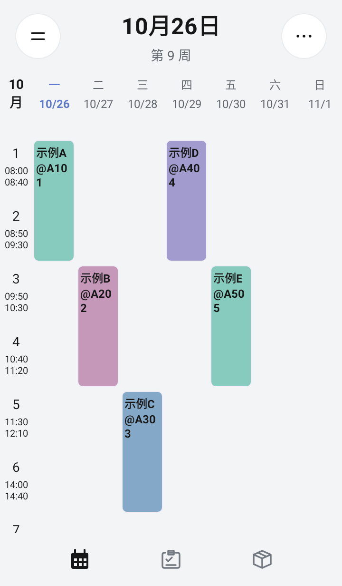
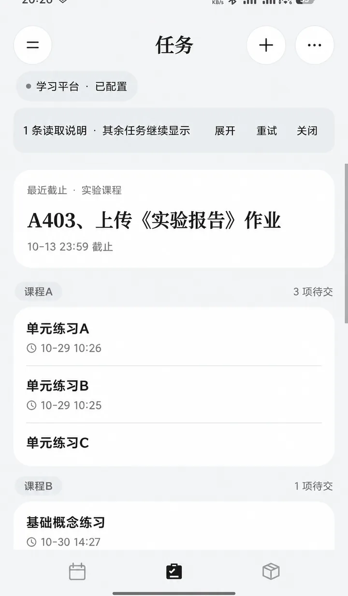
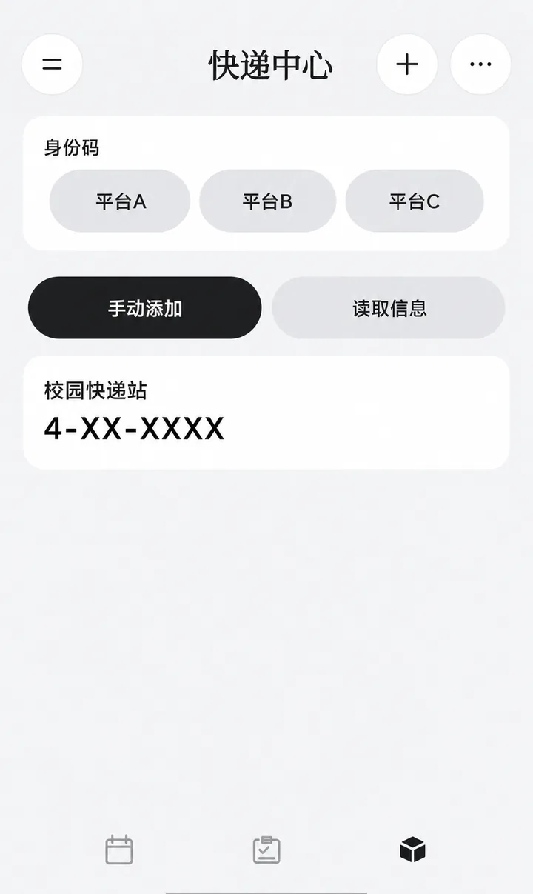

周课表
左右滑动切周，支持多份课表、单次调课、停课与冲突课程选择。宿迁学院、徐州工程学院可学校导入，其他学校可手动添加。

左右滑动切周，支持多份课表、单次调课、停课与冲突课程选择。宿迁学院、徐州工程学院可学校导入，其他学校可手动添加。
在桌面查看课程与待取快递，支持多种尺寸。已导入的课表可离线查看。

手动添加任务，或连接学习通同步作业；按课程分组，显示截止时间。

手动添加、粘贴文字或识别截图；通知识别需单独授权。提供官方身份码入口。
两种版本可覆盖安装切换，无需卸载。更新记录与校验文件见 GitHub Releases。
课表、任务和快递数据保存在本机。学校与学习通账号密码在验证成功后使用 Android Keystore 加密保存，用于对应平台的验证与刷新。同步失败保留已有数据。
通知识别默认关闭，需要应用内同意和系统授权；只解析选定来源，不保存通知全文，不读取短信数据库。图片在本机识别，不上传；桌面显示取件码需单独开启。
公告和更新服务不接收课表、账号或密码。徐州工程学院当前教务入口使用 HTTP；密码按学校协议加密，但账号、课表和会话传输不受 HTTPS 保护，请在可信网络中同步。
课表不会通过系统备份自动迁移。更换手机、卸载或清空应用数据前，请保存重要信息。
完整隐私说明